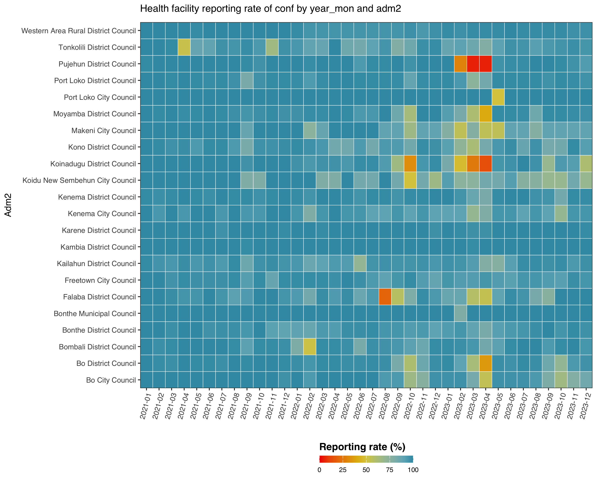
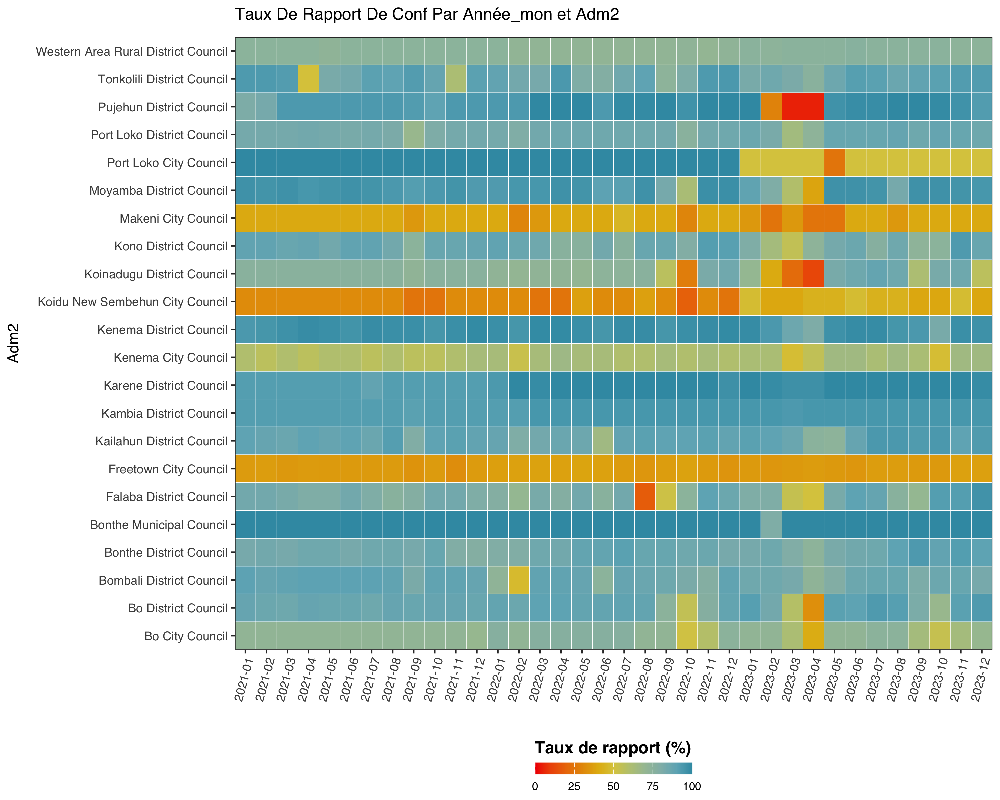
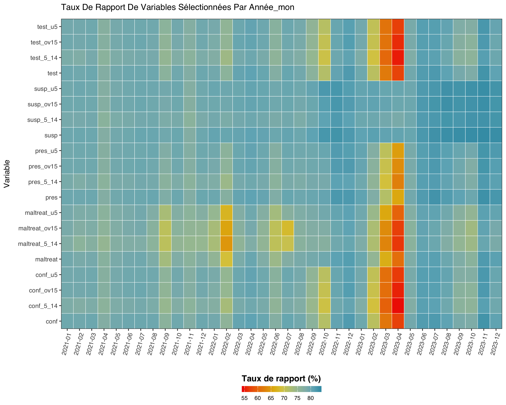

Before any stratification, trend analysis or modelling step, an SNT
analyst needs to know how completely facilities are
reporting. calculate_reporting_metrics() is the
workhorse: it answers the “who reported, when, where” question in three
different shapes.
For the related question - are the values they reported internally consistent and free of outliers - see the Data quality article.
We use the Sierra Leone DHIS2 sample shipped with the package throughout.
library(sntutils)
sl_dhis2 <- read(
system.file("extdata", "sl_exmaple_dhis2.rds", package = "sntutils")
) |>
dplyr::rename(year_mon = date) |>
dplyr::filter(year_mon >= "2020.01") |>
dplyr::mutate(
hf_uid = vdigest(paste0(adm1, adm2, hf), algo = "xxhash32"),
record_id = vdigest(paste(hf_uid, year_mon), algo = "xxhash32")
)For the methodology and conceptual background behind the steps in this article, please check the SNT Code Library:
- Reporting rates - what reporting rate measures and how to interpret it.
- Active facility status - the denominator logic in plain English.
What “reporting rate” actually means here
calculate_reporting_metrics() computes the completeness
of routine reporting by checking whether health facilities have
submitted valid data for a specified set of indicators over time. It
calculates rates for one or more target variables
(vars_of_interest) against an expectation set defined by
the key indicators (key_indicators).
A facility counts as reporting in a given year-month
if any of the selected vars_of_interest is non-missing. A
facility is included in the denominator for a given
year-month only if it has already reported on any of the
key_indicators at or before that month. This prevents
newly-opened facilities from dragging the historic non-reporting rate
down.
Let:
- - administrative unit (e.g. district)
- - time period (year-month)
- - facility in
-
key_indicators- variables used to determine whether a facility is active, e.g."test","treat","conf","pres","allout" -
vars_of_interest- variables we want the reporting rate for, e.g."conf","pres"
The reporting rate for unit in period is
where
-
- facilities in
that reported any value in
vars_of_interestduring -
- facilities in
whose first-ever report on any
key_indicatorsoccurred on or before .
Scenario 1 - Facility-level reporting / missing rate
This is the rate you almost always want when reporting to a country team. It uses an evolving denominator (facilities that have ever reported) so the early months of a new system aren’t punished.
calculate_reporting_metrics(
data = sl_dhis2,
vars_of_interest = c("conf", "pres"),
x_var = "year_mon",
y_var = "adm2",
hf_col = "hf_uid",
key_indicators = c("allout", "test", "treat", "conf", "pres")
) |>
utils::tail()
#> # A tibble: 6 × 6
#> year_mon adm2 rep exp reprate missrate
#> <chr> <chr> <int> <int> <dbl> <dbl>
#> 1 2023-12 Moyamba District Council 106 108 0.981 0.0185
#> 2 2023-12 Port Loko City Council 2 2 1 0
#> 3 2023-12 Port Loko District Council 99 103 0.961 0.0388
#> 4 2023-12 Pujehun District Council 96 104 0.923 0.0769
#> 5 2023-12 Tonkolili District Council 109 115 0.948 0.0522
#> 6 2023-12 Western Area Rural District Council 62 64 0.969 0.0312The plot version is reporting_rate_plot() with the same
arguments:
reporting_rate_plot(
data = sl_dhis2,
vars_of_interest = "conf",
x_var = "year_mon",
y_var = "adm2",
hf_col = "hf_uid",
key_indicators = c("allout", "test", "treat", "conf", "pres")
)
Scenario 2 - Reporting rate by two dimensions
When we want a heatmap of completeness across time × space for one or
more variables, without the activity-based denominator, drop
hf_col and key_indicators:
calculate_reporting_metrics(
data = sl_dhis2,
vars_of_interest = c("conf", "pres"),
x_var = "year_mon",
y_var = "adm2"
) |>
utils::head()
#> # A tibble: 6 × 7
#> year_mon adm2 variable exp rep reprate missrate
#> <chr> <chr> <chr> <int> <int> <dbl> <dbl>
#> 1 2021-01 Bo City Council conf 39 28 0.718 0.282
#> 2 2021-01 Bo City Council pres 39 28 0.718 0.282
#> 3 2021-01 Bo District Council conf 129 113 0.876 0.124
#> 4 2021-01 Bo District Council pres 129 113 0.876 0.124
#> 5 2021-01 Bombali District Council conf 81 73 0.901 0.0988
#> 6 2021-01 Bombali District Council pres 81 73 0.901 0.0988And the matching plot, this time with French labels:
reporting_rate_plot(
data = sl_dhis2,
vars_of_interest = "conf",
x_var = "year_mon",
y_var = "adm2",
target_language = "fr"
)
Scenario 3 - Reporting rates over time
To see when each variable starts being reported (and where it stops),
drop y_var entirely:
vars <- c(
"test", "test_u5", "test_5_14", "test_ov15",
"susp", "susp_u5", "susp_5_14", "susp_ov15",
"pres", "pres_u5", "pres_5_14", "pres_ov15",
"conf", "conf_u5", "conf_5_14", "conf_ov15",
"maltreat", "maltreat_u5", "maltreat_5_14", "maltreat_ov15"
)
reporting_rate_plot(
sl_dhis2,
full_range = FALSE,
vars_of_interest = vars,
x_var = "year_mon",
target_language = "fr"
)
Date-based reporting
calculate_reporting_metrics_dates() is the variant for
facility registries that record opening and closing dates rather than
month-by-month reporting. It computes the share of facilities active in
each period from start_col / end_col
columns.
Mapping reporting rates
reporting_rate_map() joins the metrics tibble to an
admin shapefile and renders a small-multiples map. It accepts everything
calculate_reporting_metrics() does, plus an sf
argument:
reporting_rate_map(
data = sl_dhis2,
shapefile = sle_adm2_clean,
adm_var = "adm2",
vars_of_interest = "conf",
x_var = "year",
hf_col = "hf_uid",
key_indicators = c("allout", "test", "treat", "conf", "pres"),
target_language = "en"
)Facility activity classification
For deeper diagnostics, classify_facility_activity()
labels each facility-month as active,
inactive, never-reported or
discontinued, using a configurable rolling window.
facility_reporting_plot() then renders a tiled timeline so
we can spot facilities that stopped reporting in mid-2022 or never came
online:
hf_status <- classify_facility_activity(
data = sl_dhis2,
hf_col = "hf_uid",
x_var = "year_mon",
vars_of_interest = c("conf", "pres", "test"),
nonreport_window = 6
)
facility_reporting_plot(
hf_status,
facet_by = "adm2"
)get_active_facilities() returns just the active subset,
ready to feed back into a filtered analysis.
compare_methods_plot() lets us compare two
reporting-rule choices (e.g. any indicator vs all
indicators) on the same data.
validate_routine_hf_data() is the upstream sanity check
- it runs a battery of structural checks on a routine HF dataset
(required columns, parseable dates, plausible value ranges) before any
of the reporting-rate functions get to it. Run it once at ingest.
A reporting-rate pipeline, end to end
# 1. structural validation
validate_routine_hf_data(
data = sl_dhis2,
hf_col = "hf_uid",
date_col = "year_mon",
vars = c("conf", "pres", "test")
)
# 2. district-month reporting rates for the variables we'll model on
rates <- calculate_reporting_metrics(
data = sl_dhis2,
vars_of_interest = c("conf", "pres"),
x_var = "year_mon",
y_var = "adm2",
hf_col = "hf_uid",
key_indicators = c("allout", "test", "treat", "conf", "pres")
)
# 3. facility-level activity so we can mask non-reporting facilities later
activity <- classify_facility_activity(
data = sl_dhis2,
hf_col = "hf_uid",
x_var = "year_mon",
vars_of_interest = c("conf", "pres", "test"),
nonreport_window = 6
)
# 4. map of completeness in French, ready for the country-team report
reporting_rate_map(
data = sl_dhis2,
shapefile = sle_adm2_clean,
adm_var = "adm2",
vars_of_interest = "conf",
x_var = "year",
hf_col = "hf_uid",
key_indicators = c("allout", "test", "treat", "conf", "pres"),
target_language = "fr"
)rates and activity are the inputs the Data quality article picks up from
here.